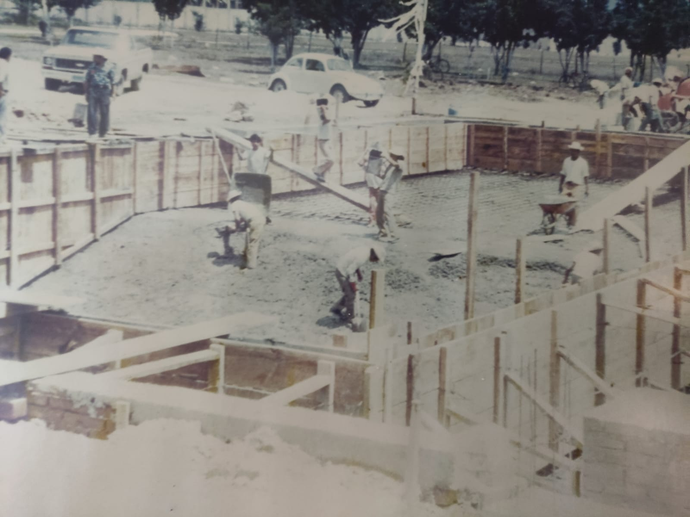
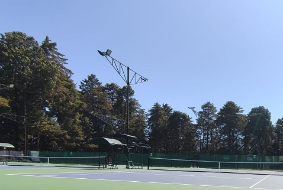
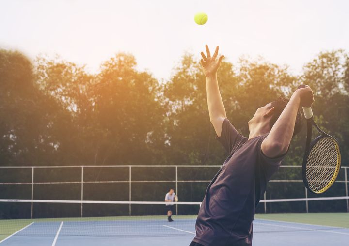

Historia
Hace mas de 40 años familias deportistas se unieron con el fin de tener en San Cristóbal de las Casas el primer club deportivo privado que tuviera dentro de sus instalaciones canchas de tenis y alberca. Poco a poco fueron uniéndose más personas entusistas y se formó el Deportivo San Cristóbal, A.C. con socios fundadores y socios usuarios.

Actualidad
En este momento somos el deportivo de mayor prestigio en la zona de los Altos de Chiapas ya que continuamente estamos renovando nuestras instalaciones, contamos con un equipo de profesionales en cada disciplina y nos esforzamos por dar el mejor servico todos los días.
